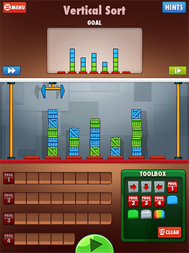
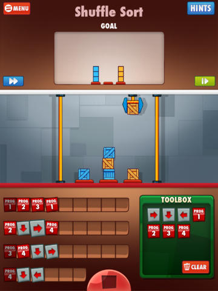

MC102 - Algoritmos e Programação de Computadores
Turmas QRSTWY
Instituto de Computação - Unicamp
Professores: Hélio Pedrini e Zanoni Dias
Monitores: Andre Rodrigues Oliveira, Gustavo Rodrigues Galvão, Javier Alvaro Vargas Muñoz e Thierry Pinheiro Moreira
Lab 04a - Cargo-Bot - Part I
Prazo de entrega: 13/04/2015 às 13h59m59s
Peso: 3
Cargo-Bot é um jogo onde, através de comandos predefinidos, você programa um braço robótico para mover caixas de uma configuração inicial até uma configuração desejada. Cargo-Bot foi o primeiro jogo desenvolvido inteiramente em um iPad, através do aplicativo Codea, um editor de código touch-screen feito exclusivamente para iPads, criado pela empresa TwoLivesLeft.
 
Para cada configuração do jogo é disponibilizado um determinado número de comandos na ToolBox, que podem ser distribuídos em 4 programas, como mostram as imagens acima. Além disso, as caixas possuem cores, que podem ser azul, amarela, vermelha ou verde. Os três comandos básicos são:
 = Mover o braço robótico para a esquerda, caso exista posição à esquerda (caso contrário, não faça nada);
= Mover o braço robótico para a esquerda, caso exista posição à esquerda (caso contrário, não faça nada);- = Mover o braço para a direita, caso exista posição à direita (caso contrário, não faça nada);
- = Descer o braço robótico e:
- Pegar uma caixa, caso exista uma caixa na posição em que o braço se encontra e ele não segura nenhuma caixa;
- Deixar uma caixa na posição em que o braço se encontra, se ele estava segurando uma caixa;
- Nada, caso o braço robótico esteja vazio e não exista nenhuma caixa na posição em que o braço se encontra.
Após descer e realizar uma das operações acima, o braço robótico sobe automaticamente.
Além dos comandos básicos, existem três comandos condicionais, que podem ser aplicados sobre um comando básico:
- = Executa o comando básico caso a cor da caixa que ele segura seja a mesma do condicional (neste caso, verde);
- = Executa o comando básico caso ele esteja segurando uma caixa (de qualquer cor);
- = Executa o comando básico caso ele não esteja segurando nenhuma caixa.
Por fim, existem os comandos para executar um programa (lista de comandos), representados por botões vermelhos com rótulo Prog N, que executa os comandos do programa de número N. Por exemplo, o comando  executa os comandos existentes na linha com rótulo Prog 1.
executa os comandos existentes na linha com rótulo Prog 1.
Após receber um email de sua autoria reclamando que o jogo está disponível apenas para iOS, a TwoLivesLeft lhe desafiou a criar uma versão do jogo para ser jogado pelo computador.
Como todo programa ou jogo normalmente é feito de forma incremental, sua primeira versão do jogo será um pouco mais simples, para ser executada sem interface gráfica.
Dada uma lista de quantas caixas existem em cada posição e uma lista de comandos básicos, seu programa deve imprimir a quantidade de caixas existentes em cada posição após a execução da lista de comandos, realizados de forma similar ao jogo original.
Entrada
- A primeira linha da entrada consiste de 2 números inteiros, X e Y, onde X representa o número de posições existentes para empilhamento das caixas, com 2 ≤ X ≤ 10, e Y representa o número máximo de caixas que podem ser empilhadas, com 2 ≤ Y ≤ 20.
- A segunda linha da entrada consiste em X números inteiros, representando o número de caixas existentes inicialmente em cada posição.
- A terceira linha da entrada contém diversos caracteres, representando os seguintes comandos básicos do jogo:
- L = ;
- R = ;
- D = .
O último caractere da terceira linha será um *, indicando fim de comandos.
- Considere que o braço robótico só pode se mover para uma posição com Y caixas empilhadas se ele não estiver segurando nenhuma caixa. Caso contrário, a caixa que ele segura empurrará a pilha com as Y caixas, gerando um acidente.
- Considere que, antes do primeiro comando, o braço robótico encontra-se sempre na posição mais à esquerda e não segura nenhuma caixa.
Saída
- Se um acidente ocorreu durante a execução dos comandos, seu programa deve imprimir apenas "Um acidente ocorreu".
- Caso contrário, seu programa deve imprimir o número de caixas em cada posição após a execução de todos os comandos básicos no seguinte formato: "N1 N2 ... NX", onde Ni é o número de caixas existentes na i-ésima posição.
Exemplos
| # | Entrada | Saída |
| 1 | 2 5
3 4
DRD* | 2 5 |
| 2 | 3 3
3 2 3
DRR* | Um acidente ocorreu |
| 3 | 10 20
7 5 3 8 2 1 6 4 3 0
DRDLDLRDRDRDLDRRRDRDLLRDLDLDLD* | 5 7 0 10 1 3 5 4 3 0 |
| 4 | 6 7
5 4 3 2 1 0
DRRRRDLLLDLDRDRRRDLRDLDLDRDRDRDLLLLDLDRDLD* | 7 0 2 4 1 1 |
| 5 | 2 10
10 0
DRDLDRDLDRDLDRDLDRDLDRDLDRDLDRDLDRDLDRDL* | 0 10 |